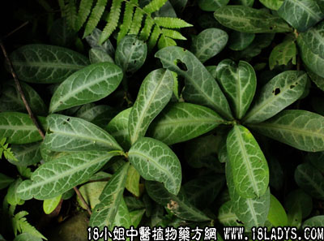

植物名：龙脷叶。
生长环境：本品为多年生小灌木，栽培于园圃作观赏或药用。
分布：马拉西亚和我国南部。
入药部分：叶。
采集期：5～10月。
自采地点：家种。
性味：性平、味甘淡。
功能：润肺止咳。
主治、用量和用法：肺燥咳，生或干用3至5钱，清水煎服，或加蜜枣，猪瘦肉同煎亦可。
验方：（治肺热咳嗽方）龙脷叶3钱、红菱根5钱、牛大力5钱、五爪龙5钱、清水三碗，煎成一碗服。
（方解）广东民间用龙脷叶治肺热咳嗽，约有五十余年历史。每配伍蜜枣、猪瘦肉、菜干等同用，效验可靠。在本方可配伍红菱根清肝肺热，牛大力润肺，五爪龙化气，合为清燥、润肺、理气除痰之剂。
（方歌）肺热咳嗽龙脷叶、红菱根与牛大力，化气还加五爪龙，除痰润肺功效捷。
本文解释权归中药大全，本文地址：https://www.daquan.com/post/1600.html